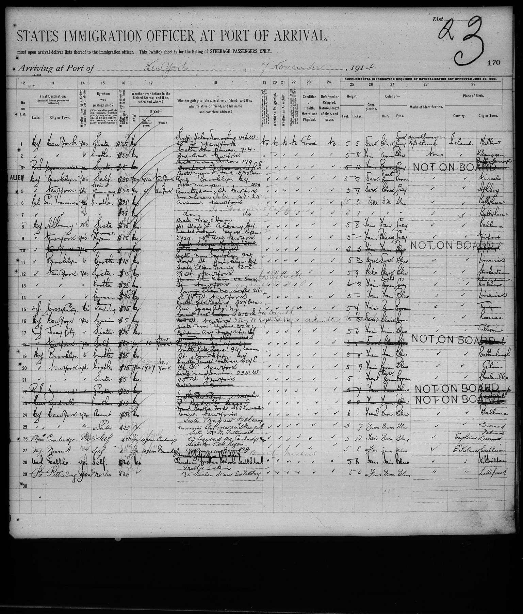

Record forms
What the historical documents themselves are: the printed forms behind the facts, why their columns exist, and how to read them. The first is the US passenger manifest of 1907–1917.

US passenger manifest, "List or Manifest of Alien Passengers for the United States", 1907–1917 form
SS Lapland (Red Star Line, Antwerp/Liverpool → New York), arrived 7 Nov 1914, List 23, page 170, the right-hand (second) page: columns 12–29. Source: NARA microfilm T715 (New York passenger lists 1897–1957), roll 2382; FamilySearch image 3:1:3Q9M-C9TX-WSSQ-R (records JJSJ-H4W, JJSJ-H47).
Why it's here: lines 6–7 are Ellie McCabe (22) and Katherine McCabe (18) of Ballyhaise, Co. Cavan. Page 1 (image …WS9G-F) names their father, "Laurence McCabe, Corgarvie, Ballyhaise". This page says they were going to San Francisco, passage paid by their brother, and joining "Mrs O'Brien, (sister), 4125 … Avenue". That sister is the Susan McCabe of the 1904 Teutonic, so these two lines tied the Gortskeagh family to the Susan who married Frank O'Brien, and showed she is not Peter's Susan.
The form
Each manifest is a two-page spread. Page 1 has columns 1–11: name, age, sex, marital status, occupation, literacy, nationality, race or people, last residence, nearest relative in the home country. Page 2, this image, has columns 12–29:
| col | heading | why it was asked |
|---|---|---|
| 12 | No. on list | links the line to page 1 |
| 13 | Final destination (state, city) | |
| 14 | Whether having a ticket to final destination | |
| 15 | By whom was passage paid (self, relative, society, municipality, government) | screening for "assisted" immigrants: people whose passage was paid by a charity, a parish or a foreign government were suspected of being "likely to become a public charge" (1882 Act) |
| 16 | Whether in possession of $50, and if less, how much | same public-charge test; the sum was often coached ("$25", "$15") |
| 17 | Whether ever before in the United States; if yes, when and where | |
| 18 | Whether going to join a relative or friend: name and complete address | the most useful column for genealogy; also used to check that someone would receive the immigrant |
| 19 | Ever in prison or almshouse, or institution for the insane, or supported by charity | excluded classes |
| 20 | Whether a polygamist | polygamists were an excluded class from the Immigration Act of 1891, aimed at Mormon converts arriving from Europe (the anti-polygamy campaign: Morrill 1862, Edmunds 1882, Edmunds–Tucker 1887). The question stayed on the form into the 1920s |
| 21 | Whether an anarchist | added after President McKinley's assassination (1901) by the anarchist Leon Czolgosz; the Immigration Act of 1903 (the "Anarchist Exclusion Act") barred anarchists. Answered "No" by everyone, every time |
| 22 | Whether coming by reason of any offer, solicitation, promise or agreement of labor (contract labor) | the Alien Contract Labor Law of 1885 (Foran Act) banned importing workers under prior contract, a union demand. An honest "yes" got you deported, so the answer is always "No" |
| 23 | Condition of health, mental and physical | filled in after the line inspection at Ellis Island ("Good") |
| 24 | Deformed or crippled; nature, length of time and cause | |
| 25–27 | Height (ft, in), complexion, colour of hair and eyes | the "Supplemental information required by Naturalization Act approved June 29, 1906": these columns let later naturalisation clerks match a petitioner to his arrival record |
| 28 | Marks of identification | same 1906 purpose ("smallpox on left thumb", line 1) |
| 29 | Place of birth: country, city or town | also from 1906 |
How it was filled in: at the port of departure, by the shipping line's clerks, from the passenger's answers. US law made the line liable, and fined it, for carrying excluded aliens, so the lines did the first screening. At Ellis Island the "List" (here 23) and line number were the passenger's tag. Inspectors checked each person against the line and corrected it: struck-through lines are marked NOT ON BOARD, and "Admitted" is pencilled in.
Later annotations often added in the margins: naturalisation certificate numbers, "verification of landing" stamps (e.g. "2-131546" style numbers from the 1930s–40s, when a person proved lawful entry), and deportation notes. One such 1941 annotation sits on this family's line.
Form history in brief: - Before 1882: customs passenger lists (name, age, sex, occupation, country, from 1820). - 1882–1893: the first federal immigration laws (head tax, "public charge", Chinese Exclusion). - 1893: the first standardised immigration manifest with the yes/no screening questions. - 1903–1907: anarchist and contract-labour questions, then the page-2 physical description (1906–07). - 1917: a literacy test and the "Asiatic Barred Zone". - 1924: quotas, and passports and visas required. The manifest then shrinks, because screening moved to US consulates abroad.
Historical setting of this sheet: - When: November 1914, three months into the First World War. - The ship: Antwerp had fallen to Germany on 9–10 October, so the Red Star Line's Lapland sailed from Liverpool, which is where the Irish passengers on this page boarded. - The collapse: transatlantic emigration was falling fast. Ellis Island arrivals dropped from about 880,000 in 1914 to about 178,000 in 1915. - The McCabe sisters: Ellie and Katherine joined their sister Susan (Mrs Frank O'Brien) in San Francisco, the city she had reached ten years earlier on the Teutonic.
Caveats for research: - Ages and names are what a clerk heard. - The "$50" and "join a relative" answers were often coached. - Columns 19–22 are almost always pro forma "No". - Page 1 and page 2 must be read together: the line number links them. - FamilySearch indexes usually cover page 1 only, so the relative in America (col. 18) is often not indexed.